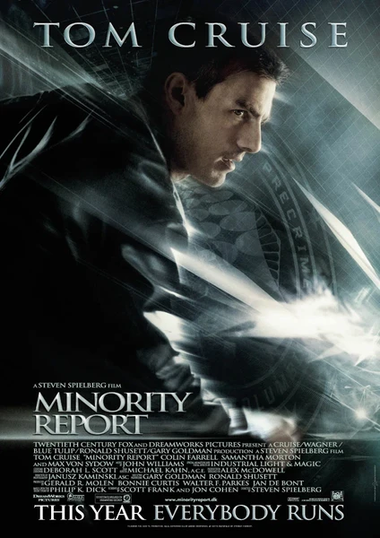

Фильм · 2002 · Драма, Криминал
Вашингтон, 2054 год: система «Особое мнение» (PreCrime), основанная на пророчествах трех «оракулов», предотвращает убийства еще до их совершения. Джон Эндертон, лучший сотрудник этого подразделения, сам становится подозреваемым: оракулы предсказывают, что он убьет человека, которого никогда не встречал. Бежать бессмысленно: его глаза сканируют в каждом магазине, реклама обращается к нему по имени, а механические пауки прочесывают здания. Фильм Стивена Спилберга по мотивам произведения Филипа К. Дика — история о предсказании будущего, неприкосновенности частной жизни и свободе воли.
Washington, 2054: the PreCrime system, built on prophecies of three 'oracles', stops murders before they happen. John Anderton, the unit's best officer, becomes a suspect himself: the oracles predict he will kill a man he has never met. Running is pointless — his eyes are scanned in every store, ads address him by name, and mechanical spiders comb the buildings. Spielberg's Philip K. Dick adaptation about prediction, privacy and free will.
← Вернуться в каталог IT Movies